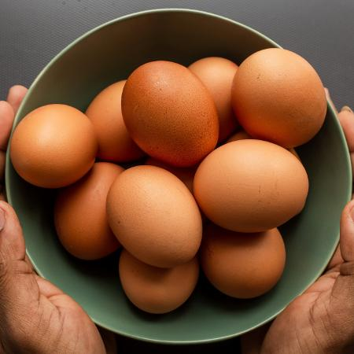
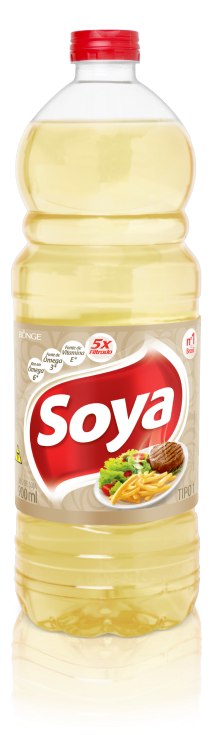
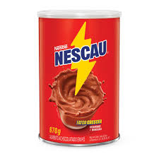
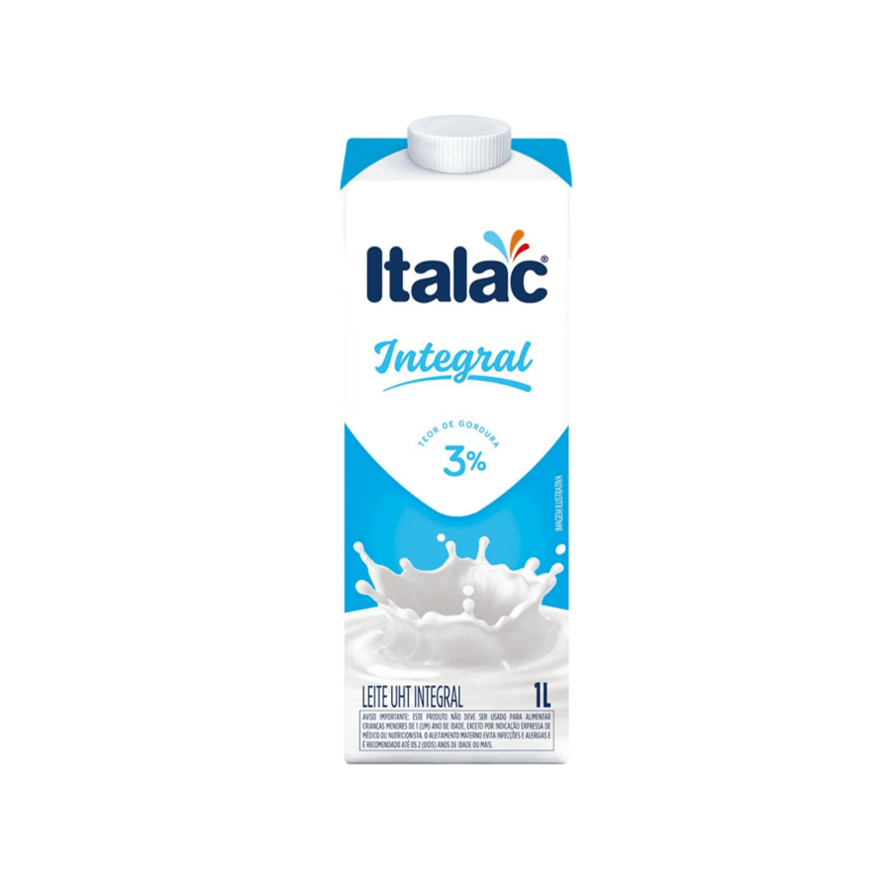
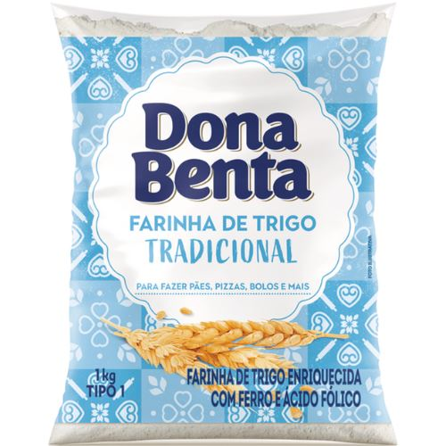
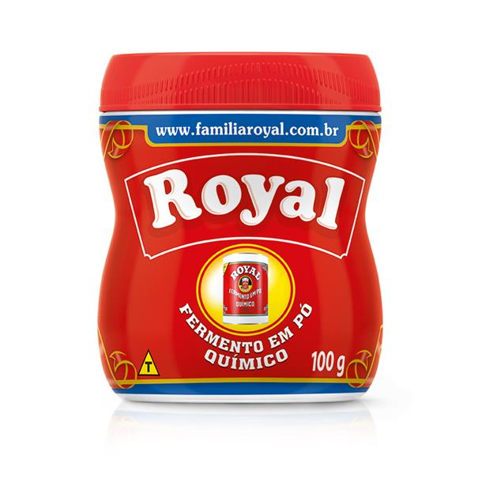

Receita de Bolo
Como fazer um bolo de chocolate
| Imagem |
Descrição |
Quantidade |
|  |
Ovos |
3 |
|
Açúcar |
1/5 xícara |
|  |
Óleo |
1 xícara |
|  |
Chocolate |
2 xícaras |
|  |
Leite |
2 xícaras |
|  |
Farinha |
3 xícaras |
|  |
Fermento |
1 colher |
Modo de Preparo
- Despeje no liquidificador o açúcar, leite, chocolate e óleo.
- Após 5 minutos, coloque a mistura em um recipiente. Adicione a farinha aos poucos e continue misturando.
- Ao final, adicione o fermento.
- Deixe o forno pré-aquecido a 180ºC por 40 minutos.
- Verifique com uma faca: se sair limpa, o bolo está pronto.
Materiais de Preparo
Liquidificador
Recipiente
Forno